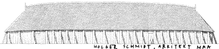

|
 Reconstruction
of the ninth-century A massive wooden building, this princely Viking Age dwelling covered approximately 500 sq. meters. The largest hall thus far found in Scandinavia, its size can be judged from the man entering the door toward the middle right. The gables at either end of the curved roof ridge were probably ported to let smoke escape. The end view (Illustration 3) details the shingled roof construction and the covered walkway under the eaves of the roof. Index to illustrations
|